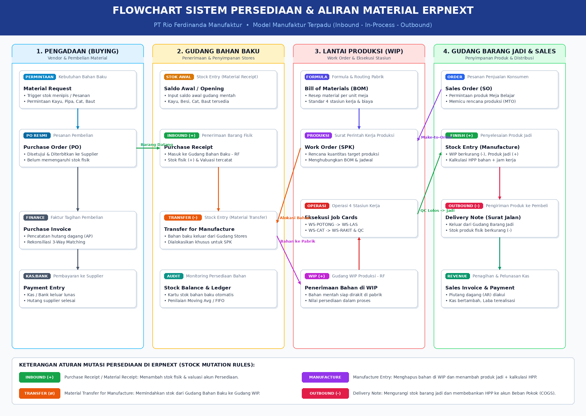

Puji dan syukur penulis panjatkan ke hadirat Tuhan Yang Maha Esa atas segala rahmat, taufik, dan hidayah-Nya, sehingga buku pembelajaran dan panduan praktikum yang berjudul "Buku Panduan Praktikum ERPNext & Frappe Framework: Implementasi Teknologi Modern pada Industri Manufaktur" ini dapat diselesaikan dengan lengkap, sistematis, dan teruji secara empiris.
Perkembangan teknologi komputasi awan, kontainerisasi, dan kecerdasan buatan telah mentransformasi lanskap Sistem Informasi Akuntansi (SIA) pada sektor industri manufaktur. Penerapan sistem Enterprise Resource Planning (ERP) modern kini tidak hanya menuntut pemahaman teoritis mengenai siklus akuntansi dan penentuan harga pokok produksi, melainkan juga penguasaan infrastruktur komputasi kontainer (Docker Desktop berbasis WSL2), orkestrasi kecerdasan buatan otonom dengan protokol keamanan ketat (Google Antigravity IDE dengan Strict Approval Prompting), serta sintesis pengetahuan berbasis Grounded Knowledge Management (NotebookLM).
Buku ini dirancang secara terstruktur untuk menjembatani kesenjangan antara teori akuntansi biaya/manufaktur dan implementasi sistem perangkat lunak riil pada ERPNext Version 16. Melalui studi kasus komprehensif pada PT Rio Ferdinanda Manufaktur (industri perakitan furnitur perpaduan kayu solid dan rangka metal), pembaca dibimbing langkah demi langkah mulai dari penyiapan kontainer terisolasi, perancangan bagan akun standar Indonesia (114 akun), impor master dataset multi-tahap, pengelolaan formula produksi (BOM & Routing), eksekusi perintah kerja perakitan (Work Order & Job Cards), hingga penerbitan laporan keuangan berbasis sistem persediaan perpetual otomatis.
Penulis menyampaikan rasa hormat dan terima kasih yang setinggi-tingginya kepada Bapak Dr. Totok Dewayanto, S.E., M.Si., Ak., CA. selaku Dosen Pembimbing yang telah memberikan bimbingan, arahan strategis, koreksi substantif, serta inspirasi keilmuan yang tiada henti dalam pengembangan kurikulum praktikum berbasis teknologi mutakhir ini. Ucapan terima kasih juga disampaikan kepada pimpinan Fakultas Ekonomika dan Bisnis Universitas Diponegoro serta rekan-rekan mahasiswa Departemen Akuntansi angkatan 2023 atas diskusi produktif dan kebersamaan akademis yang berharga.
Penulis menyadari bahwa buku panduan ini masih memiliki ruang penyempurnaan seiring pesatnya pembaruan ekosistem Frappe/ERPNext. Oleh karena itu, kritik dan saran konstruktif dari pembaca sangat diharapkan demi penyempurnaan edisi berikutnya. Semoga buku ini memberikan kontribusi nyata bagi pengembangan kompetensi digital akuntan masa depan Indonesia.
|
Semarang, 14 Oktober 2026 Penulis, Rio Ferdinanda NIM: 12030123140254 |
| HALAMAN JUDUL | i |
| KATA PENGANTAR | ii |
| DAFTAR ISI | iii |
| DAFTAR TABEL DAN GAMBAR | v |
| BAB I: PENGENALAN ERPNEXT, FRAPPE FRAMEWORK, DOCKER, ANTIGRAVITY, DAN NOTEBOOKLM | 1 |
| 1.1 Arsitektur Sistem ERPNext dan Frappe Framework | 1 |
| 1.2 Peran Docker Desktop & WSL2 dalam Lingkungan Pengembangan Kontainer | 3 |
| 1.3 Pengenalan AI Agent Assistant Google Antigravity IDE | 4 |
| 1.4 Pengenalan NotebookLM sebagai Knowledge Management System (KMS) | 5 |
| BAB II: PANDUAN INSTALASI DAN TATA KELOLA EKSEKUSI SISTEM | 7 |
| 2.1 Penyiapan Lingkungan Virtualisasi Docker Desktop & Antigravity IDE | 7 |
| 2.2 Verifikasi Status Docker Engine dan Stack ERPNext via AI Agent | 7 |
| 2.3 Mekanisme Strict Approval Prompting pada Antigravity IDE | 8 |
| 2.4 Akses Layanan Frontend dan Konfigurasi Setup Wizard ERPNext | 8 |
| 2.5 Generasi Master Dataset Manufaktur (ERP_Rio Ferdinanda) via Prompting | 9 |
| 2.6 Konversi Dokumentasi Spesifikasi Teknis (.md ke .docx) | 10 |
| 2.7 Eksekusi Bertahap Master Data dengan Kontrol Izin Otoritas | 10 |
| 2.8 Validasi Integritas Master Data pada Antarmuka Web ERPNext | 11 |
| 2.9 Pembuatan & Visualisasi Flowchart Persediaan Multi-Warehouse Terintegrasi | 11 |
| 2.10 Integrasi Knowledge Management System via NotebookLM | 12 |
| 2.11 Penyusunan & Injeksi Bagan Akun Manufaktur (COA Excel 114 Akun) | 12 |
| 2.12 Perumusan Studi Kasus & Eksekusi Skema Praktikum Transaksional | 13 |
| BAB III: EKSPLORASI FITUR DAN MODUL-MODUL UTAMA ERPNEXT VERSION 16 | 14 |
| 3.1 Modul Akuntansi dan Keuangan (Accounting & Finance) | 14 |
| 3.2 Modul Persediaan dan Gudang (Stock & Supply Chain) | 15 |
| 3.3 Modul Manufaktur (Manufacturing & MRP) | 16 |
| 3.4 Modul Penjualan dan Pembelian (Sales & Procurement) | 17 |
| 3.5 Kustomisasi Sistem DocType dan Pembaruan ERPNext Version 16 | 18 |
| BAB IV: IMPLEMENTASI PRAKTIKUM INDUSTRI MANUFAKTUR PT RIO FERDINANDA MANUFAKTUR (RFM) | 19 |
| 4.1 Profil Perusahaan PT Rio Ferdinanda Manufaktur dan Master Data Praktikum | 19 |
| 4.2 Kasus 1: Siklus Pengadaan Bahan Baku (Procurement Cycle) | 21 |
| 4.3 Kasus 2: Penyusunan Formula Produksi (Bill of Materials / BOM & Routing) | 22 |
| 4.4 Kasus 3: Eksekusi Produksi (Work Order, Job Card, & Stock Entry Manufacture) | 23 |
| 4.5 Kasus 4: Siklus Penjualan dan Penagihan (Sales Order, Delivery Note, & Invoice) | 24 |
| 4.6 Kasus 5: Analisis Laporan Keuangan, Valuasi Persediaan, dan Evaluasi Akhir | 25 |
| BAB V: PANDUAN STRUKTUR KODE AKUN (CHART OF ACCOUNTS) DAN MATRIKS JURNAL PERPETUAL | 27 |
| 5.1 Master Tabel Kode Akun Manufaktur Indonesia (Bagan Akun Standar 114 Akun) | 27 |
| 5.2 Matriks Alur Jurnal Otomatis ERPNext (Perpetual Inventory Engine) | 29 |
| BAB VI: 5 LATIHAN SOAL PRAKTIKUM & PEMBAHASAN LENGKAP KASUS MANUFAKTUR | 31 |
| 6.1 Soal Kasus 1: Pengadaan Bahan Baku & Akrual Utang (Stock Received Not Billed) | 31 |
| 6.2 Soal Kasus 2: Perhitungan Biaya Standar & Formula BOM Multi-Level | 32 |
| 6.3 Soal Kasus 3: Alokasi Biaya Tenaga Kerja & Overhead Pabrik pada Stock Entry | 33 |
| 6.4 Soal Kasus 4: Penjualan Kredit, Pengakuan HPP, dan Pengakuan Piutang Usaha | 34 |
| 6.5 Soal Kasus 5: Pelunasan Piutang, Pembayaran Vendor, dan Rekonsiliasi Kas/Bank | 35 |
| BAB VII: TUTORIAL OPERASIONAL LANGKAH DEMI LANGKAH (STEP-BY-STEP DOCKER & ANTIGRAVITY) | 37 |
| Panduan 18 Langkah Praktis Eksekusi ERPNext Terintegrasi | 37 |
| BAB VIII: STANDAR OPERASIONAL PROSEDUR (SOP), ANALISIS SWOT, DAN KESIMPULAN | 44 |
| 8.1 SOP 9 Langkah Praktikum Manufaktur ERPNext | 44 |
| 8.2 Tabel Checklist Evaluasi Mandiri Praktikan | 45 |
| 8.3 Analisis Kelebihan, Keterbatasan, dan SWOT Implementasi ERPNext | 46 |
| 8.4 Kesimpulan & Rekomendasi Masa Depan | 47 |
| DAFTAR PUSTAKA | 48 |
Sistem Enterprise Resource Planning (ERP) modern dituntut untuk menyajikan tingkat ketangkasan data yang tinggi, arsitektur modular, dan kemampuan integrasi yang menyeluruh antar-lini fungsional organisasi bisnis. Pada era transformasi digital saat ini, pemisahan data manual (silo) antar-departemen—seperti gudang, produksi, pemasaran, dan pembukuan—merupakan sumber inefisiensi utama yang memicu disparitas saldo persediaan, keterlambatan pengiriman, dan distorsi laporan keuangan.
ERPNext hadir sebagai solusi ERP terintegrasi open-source paling tangguh dan komprehensif di dunia bisnis saat ini. ERPNext dirancang untuk mengelola seluruh spektrum operasi bisnis modern, mencakup akuntansi umum, manajemen persediaan multi-gudang, manajemen manufaktur (perencanaan kebutuhan material / MRP), manajemen pengadaan (procurement), penjualan (order-to-cash), hingga sumber daya manusia (HRMS). Secara arsitektural, ERPNext tidak dibangun secara monolitik kaku, melainkan berjalan sepenuhnya di atas Frappe Framework, sebuah full-stack web application framework berbasis bahasa pemrograman Python di sisi server (backend) dan JavaScript/TypeScript di sisi peramban web (frontend).
Pemisahan yang tegas antara Frappe Framework sebagai fondasi komputasi dan ERPNext sebagai aplikasi bisnis memberikan keunggulan arsitektural yang sangat signifikan dibandingkan sistem komersial berbayar mahal lainnya. Frappe menyediakan seluruh blok infrastruktur aplikasi enterprise modern, yang meliputi:
frappe.get_doc(), doc.insert(), dan doc.submit()) tanpa harus menyusun kueri SQL mentah yang rentan terhadap galat injeksi dan inkonsistensi data.Dalam praktik operasional perguruan tinggi dan industri, konfigurasi perangkat lunak enterprise pada komputer personal lokal sering kali terbentur oleh variasi sistem operasi, benturan versi pustaka Python, konflik port jaringan, dan dependensi pustaka C yang rumit (dikenal sebagai kendala "it works on my machine"). Teknologi kontainerisasi menggunakan Docker Desktop menyelesaikan tantangan ini dengan mengemas aplikasi beserta seluruh pustaka, konfigurasi runtime, dan variabel lingkungannya ke dalam kontainer-kontainer terisolasi yang dapat dijalankan secara konsisten pada sistem operasi apa pun.
Pada sistem operasi Microsoft Windows 10/11, Docker Desktop memanfaatkan keunggulan Windows Subsystem for Linux 2 (WSL 2). WSL 2 mengoperasikan kernel Linux asli (Ubuntu) di dalam mesin virtual hypervisor berbobot ringan (lightweight utility VM) yang mengalokasikan memori dinamis dan menghasilkan efisiensi sistem IO mendekati performa komputasi bare-metal. Arsitektur multi-kontainer ERPNext dikelola menggunakan docker-compose.yml yang mengorkestrasi beberapa layanan inti:
8080:8080 (atau 8081:8080).Google Antigravity IDE merupakan lingkungan pengembangan mutakhir yang dilengkapi dengan Autonomous AI Coding Agent terintegrasi. AI Agent bertindak sebagai asisten rekayasa sistem yang cerdas, yang mampu memahami instruksi bahasa alami praktikan dan menerjemahkannya ke dalam serangkaian perintah terminal Linux bash, perintah CLI bench Frappe, atau kueri Python ORM secara otomatis.
Karakteristik paling fundamental yang membedakan Antigravity IDE dari asisten AI konvensional adalah penerapan prinsip Strict Approval Prompting (Tata Kelola Human-in-the-Loop). Dalam konteks Sistem Informasi Akuntansi, integritas data adalah harga mati; sebuah perintah yang memodifikasi basis data keuangan tidak boleh dieksekusi tanpa otorisasi manusia. Oleh karena itu, Antigravity IDE mewajibkan AI Agent untuk menyusun rencana kerja terperinci, berhenti sejenak sebelum mengeksekusi tindakan berisiko, dan menunggu persetujuan eksplisit dari praktikan sebelum perintah dijalankan.
Google NotebookLM dimanfaatkan sebagai Sistem Manajemen Pengetahuan (Knowledge Management System) terpusat yang dirancang khusus untuk memandu proses pembelajaran praktikum. Berbeda dengan model bahasa publik yang berpotensi menghasilkan informasi halusinasi, NotebookLM beroperasi berbasis prinsip Grounded-Source Synthesis.
Seluruh jawaban, formula biaya manufaktur, pemetaan bagan akun (Chart of Accounts), dan alur jurnal akuntansi yang dihasilkan oleh NotebookLM bersumber langsung 100% dari dokumen acuan yang diunggah oleh pengguna (seperti manual resmi ERPNext, repositori GitHub Frappe, standar akuntansi PSAK/SAK Indonesia, dan dokumen spesifikasi dataset). Sinergi antara NotebookLM sebagai penyimpan dan penalar pengetahuan akuntansi dan Antigravity IDE sebagai enjin eksekusi komputasi membentuk paradigma baru praktikum akuntansi modern yang presisi, adaptif, dan bebas dari halusinasi data.
Tahap awal pelaksanaan praktikum adalah memastikan kesiapan infrastruktur perangkat lunak pada komputer kerja praktikan. Langkah-langkah penyiapan lingkungan kerja adalah sebagai berikut:
wsl --update dan memastikan distribusi Ubuntu telah terpasang.C:\Users\Windows 10\.gemini\antigravity\scratch\ERP_Rio Ferdinanda.Setelah lingkungan kerja lokal terbuka di Antigravity IDE, praktikan melakukan audit status kontainer secara cepat menggunakan asisten AI. Praktikan memasukkan prompt konsultasi berikut pada jendela obrolan Antigravity:
Antigravity AI Agent mengeksekusi perintah docker ps untuk memindai kontainer aktif. Apabila stack kontainer frappe_docker telah aktif, Antigravity akan melaporkan identitas kontainer frontend, backend, mariadb, dan redis beserta tautan akses resmi:
frappe_docker-frontend-1 beroperasi aktif dan memetakan antarmuka web pada alamat publik http://localhost:8080 (atau port 8081). Layanan siap diakses melalui peramban web Chrome/Edge.
Guna mencegah terjadinya kekeliruan eksekusi data masal atau kerusakan skema basis data, praktikan wajib menetapkan tata aturan persetujuan bertahap (Strict Approval Prompting) kepada AI Agent melalui prompt instruksi berikut:
Dengan prompt ini, AI Agent secara disiplin menyusun proposal rencana tindakan untuk satu tahapan, menampilkan ringkasan data yang akan diproses, dan menghentikan proses sementara untuk menunggu izin resmi praktikan. Praktikan memvalidasi usulan tersebut dan mengetikkan kalimat persetujuan:
Setelah kontainer berstatus aktif, praktikan membuka peramban web dan mengakses alamat http://localhost:8080 (atau http://localhost:8081). Langkah-langkah penyelesaian Setup Wizard adalah sebagai berikut:
Administrator, Password: admin).Pembuatan data master dilakukan secara presisi dengan menginstruksikan AI Agent Antigravity untuk merancang dataset industri terstruktur dalam format CSV:
Antigravity menghasilkan struktur dataset master komprehensif yang memuat katalog bahan baku kayu solid dan rangka metal, stasiun kerja, operasi pabrik, resep BOM, hingga skenario transaksi bisnis nyata:
| No | Nama Berkas CSV | DocType / Kategori | Keterangan & Fungsi Bisnis |
|---|---|---|---|
| 1 | 01_Item_Group.csv |
Item Group | Hierarki kategori barang (Bahan Baku, Penolong, WIP, Produk Jadi). |
| 2 | 02_Warehouse.csv |
Warehouse | Struktur lokasi gudang fisik (Stores, WIP, Finished Goods, Scrap). |
| 3 | 03_Item.csv |
Item Master | Katalog item material kayu pinus, pipa hollow, baut, cat, meja jadi. |
| 4 | 04_Supplier.csv |
Supplier | Data identitas mitra pemasok material (PT Baja Logam, CV Kayu Lestari). |
| 5 | 05_Customer.csv |
Customer | Data entitas pelanggan komersial (CV Mebel Sejahtera, Toko Furnitur). |
| 6 | 06_Workstation_dan_Operation.csv |
Workstation & Op | Pusat kerja pabrik (Potong, Las, Cat, Rakit) beserta tarif per jam. |
| 7 | 07_Bill_of_Materials_BOM.csv |
Bill of Materials | Formula baku konsumsi bahan mentah dan routing durasi stasiun kerja. |
| 8 | 08_Opening_Stock_Stock_Entry.csv |
Stock Entry | Saldo awal fisik material di gudang bahan baku sebelum produksi. |
| 9 | 09_Skenario_Transaksi_Praktik.csv |
Transactional | Rangkaian urutan transaksi penjualan, perintah kerja, dan penerimaan kas. |
Guna memudahkan dokumentasi praktikum perkantoran dan pelaporan tugas akademis, panduan spesifikasi teknis dalam format Markdown (.md) dikonversi secara otomatis ke format Microsoft Word (.docx) menggunakan prompt:
Antigravity memanfaatkan perantara Word COM / Pandoc untuk menghasilkan berkas resmi Panduan_Praktik_ERPNext_Manufaktur.docx dengan format tipografi yang rapi dan siap cetak.
Proses impor master data ke basis data MariaDB ERPNext WAJIB mengikuti hierarki relasional (Foreign Key Hierarchy) guna menghindari kegagalan dependensi data:
Setelah setiap tahapan selesai diproses oleh AI Agent di terminal, praktikan melakukan verifikasi visual secara mandiri pada antarmuka web ERPNext: memeriksa modul Stock > Item untuk melihat keberadaan kode item, modul Manufacturing > Bill of Materials untuk memeriksa kelengkapan formula resep, dan modul Accounts > Chart of Accounts untuk memastikan struktur kode akun telah terhubung dengan tepat.
Manajemen persediaan multi-gudang pada industri perakitan memerlukan kejelasan visual terkait mutasi aset fisik dan titik kontrol kualitas (QC). Praktikan meminta pembuatan bagan alir melalui prompt:
Antigravity menyusun diagram alir komprehensif yang memetakan pergerakan barang mulai dari penerimaan bahan mentah di Gudang Bahan Baku, transfer material ke Gudang WIP, penyelesaian perakitan ke Gudang Barang Jadi, penampungan scrap di Gudang Scrap, hingga pengiriman barang ke pelanggan via Delivery Note.

Praktikan mengintegrasikan NotebookLM sebagai sumber acuan analitis:
Bagan Akun standar Indonesia yang memuat 114 akun hierarkis (disusun rapi dalam file Excel Kode_Akun_ERPNext_Manufaktur.xlsx) diinjeksikan secara terautomasi ke dalam basis data ERPNext menggunakan skrip Python yang dieksekusi oleh Antigravity atas izin praktikan:
Skenario praktikum diuji secara menyeluruh dengan mengeksekusi studi kasus transaksi nyata yang mencakup siklus pembelian bahan mentah, pembuatan BOM perakitan meja belajar, pengeluaran perintah kerja produksi, hingga penjualan dan penagihan kas.
Modul Akuntansi merupakan episentrum konsolidasi informasi keuangan pada ERPNext Version 16. Berbeda dengan aplikasi akuntansi pembukuan sederhana yang mengandalkan penjurnalan manual, ERPNext beroperasi berbasis filosofi Automated Double-Entry Bookkeeping. Seluruh pergerakan aset fisik, siklus pengadaan material, pemakaian bahan baku di lini perakitan, dan pengiriman barang ke konsumen secara langsung memicu pembuatan ayat jurnal buku besar (General Ledger Entries / GL Entries) secara seketika (real-time) tanpa intervensi pengetikan manual.
Fitur-fitur utama pada modul akuntansi ERPNext v16 mencakup:
Modul Persediaan mengelola pergerakan barang fisik dan valuasi persediaan di seluruh lokasi fasilitas perusahaan. ERPNext menerapkan sistem Perpetual Inventory Valuation, di mana nilai persediaan yang tercatat pada neraca keuangan selalu sinkron dengan saldo kuantitas fisik di gudang setiap detik transaksi terjadi.
Karakteristik penting pada modul persediaan meliputi:
Modul Manufaktur mengendalikan proses transformasi bahan baku mentah menjadi produk bernilai tambah melalui tahapan perakitan yang terencana. Modul ini merupakan inti operasional bagi industri Make-to-Stock (MTS) maupun Make-to-Order (MTO).
Arsitektur modul manufaktur terdiri dari 4 komponen kunci:
Siklus komersial pada ERPNext v16 menghubungkan interaksi eksternal dengan vendor dan konsumen secara mulus:
Salah satu keunggulan terbesar ERPNext Version 16 adalah kemampuannya untuk dikustomisasi tanpa mengubah kode inti framework (Low-Code / No-Code Extensibility):
Praktikum Sistem Informasi Akuntansi ini menerapkan studi kasus pada entitas bisnis manufaktur PT Rio Ferdinanda Manufaktur (RFM). Perusahaan ini bergerak dalam bidang manufaktur furnitur modern bergaya industrial yang memadukan material kayu solid ramah lingkungan dengan rangka baja pipa hollow kokoh.
Pada pelaksanaan simulasi ini, praktikan bertindak sebagai Manajer Operasional merangkap Kepala Akuntan yang bertanggung jawab penuh terhadap konfigurasi sistem, pemeliharaan master data, pelaksanaan transaksi operasional pabrik, serta pelaporan kinerja keuangan.
Katalog master data yang didaftarkan ke dalam sistem ERPNext v16 mencakup:
| Kode Item | Nama Deskripsi Barang | Kelompok Barang | Satuan (UOM) | Harga Standar (IDR) |
|---|---|---|---|---|
PROD-MEJA-01 |
Meja Belajar Minimalis RF-100 | Produk Jadi | Nos | Rp 475.000 |
PROD-RAK-01 |
Rak Buku Sudut Industrial RF-200 | Produk Jadi | Nos | Rp 350.000 |
RAW-KAYU-01 |
Papan Kayu Solid Jati Belanda 120x60x2cm | Bahan Baku | Nos | Rp 45.000 |
RAW-PIPA-01 |
Pipa Besi Hollow Galvanis 4x4cm (6m) | Bahan Baku | Batang | Rp 65.000 |
RAW-BAUT-01 |
Baut Sekrup Baja M6x40mm + Mur | Bahan Penolong | Nos | Rp 1.500 |
RAW-CAT-01 |
Cat Duco Anti Karat Hitam Doff 1L | Bahan Baku | Kaleng | Rp 85.000 |
RAW-KAKI-01 |
Karet Pelindung Kaki Meja Anti Selip | Bahan Penolong | Nos | Rp 5.000 |
RAW-AMPLAS-01 |
Kertas Amplas Grid 240 Ekstra Halus | Bahan Habis Pakai | Lembar | Rp 3.500 |
Konfigurasi fasilitas stasiun kerja dan tarif pembebanan konversi pabrik:
| Kode Workstation | Nama Stasiun Kerja | Operasi Manufaktur | Tarif Biaya / Jam |
|---|---|---|---|
WS-POTONG |
Stasiun Pemotongan Material | Pemotongan Kayu & Pipa Besi | Rp 35.000 |
WS-LAS |
Stasiun Pengelasan & Gerinda | Pengelasan Rangka Hollow | Rp 45.000 |
WS-CAT |
Stasiun Finishing & Spray Duco | Pengecatan & Pengeringan Cat | Rp 40.000 |
WS-RAKIT |
Stasiun Perakitan Ergonomis & QC | Perakitan Akhir & Inspeksi Mutu | Rp 30.000 |
PT Rio Ferdinanda Manufaktur mengawali operasi dengan melakukan pengadaan material mentah kepada mitra rekanan vendor terdaftar untuk mendukung rencana perakitan:
Purchase Receipt MAT-PRE-2026-00001. Aset fisik resmi dibukukan ke dalam Gudang Bahan Baku - RF.1136 - Stock Received But Not Billed dan mendebet akun aset persediaan: 1131 - Persediaan Bahan Baku Utama.Purchase Invoice, yang membalik akun kliring 1136 ke akun utang definitif 2111 - Utang Dagang Pemasok.Formula standar pembuatan satu unit Meja Belajar Minimalis RF-100 (PROD-MEJA-01) disusun dengan memperhitungkan komponen biaya bahan baku langsung (Direct Materials), biaya tenaga kerja langsung (Direct Labor), serta biaya overhead pabrik (Factory Overhead):
| Komponen Biaya | Rincian Kebutuhan per Unit | Rasio Kuantitas | Subtotal Biaya (IDR) |
|---|---|---|---|
| Biaya Bahan Baku: | Papan Kayu Solid Jati Belanda | 1.0 Nos @ Rp 45.000 | Rp 45.000 |
| Pipa Besi Hollow Galvanis | 0.5 Batang @ Rp 65.000 | Rp 32.500 | |
| Baut Sekrup Baja M6x40mm | 8.0 Nos @ Rp 1.500 | Rp 12.000 | |
| Cat Duco Anti Karat Hitam | 0.25 Kaleng @ Rp 85.000 | Rp 21.250 | |
| Karet Pelindung Kaki Meja | 4.0 Nos @ Rp 5.000 | Rp 20.000 | |
| Kertas Amplas Grid 240 | 1.0 Lembar @ Rp 3.500 | Rp 3.500 | |
| Total Estimasi Biaya Bahan Langsung (Direct Materials) | Rp 134.250 | ||
| Biaya Konversi: | Pemotongan Bahan (WS-POTONG) | 15 Menit @ Rp 35.000/jam | Rp 8.750 |
| Pengelasan Rangka (WS-LAS) | 20 Menit @ Rp 45.000/jam | Rp 15.000 | |
| Pengecatan Duco (WS-CAT) | 15 Menit @ Rp 40.000/jam | Rp 10.000 | |
| Perakitan & QC (WS-RAKIT) | 20 Menit @ Rp 30.000/jam | Rp 10.000 | |
| Total Estimasi Biaya Operasi Konversi (DL & FOH) | Rp 43.750 | ||
| TOTAL ESTIMASI HARGA POKOK PRODUKSI (HPP) PER UNIT | Rp 178.000 | ||
Proses perakitan meja belajar dieksekusi dengan tahapan operasional ketat:
Work Order MFG-WO-2026-00001 untuk memproduksi 10 unit PROD-MEJA-01. Target Gudang Bahan Baku adalah Gudang Bahan Baku - RF, Gudang Transit Gudang WIP Produksi - RF, dan Gudang Produk Jadi Gudang Barang Jadi - RF.Stock Entry (Material Transfer) diterbitkan untuk mengeluarkan 10 papan kayu, 5 batang pipa hollow, 80 baut sekrup, 2.5 kaleng cat, 40 karet pelindung kaki, dan 10 amplas ke lantai pabrik. Secara akuntansi, nilai persediaan berpindah dari akun 1131 (Bahan Baku) ke akun 1133 (Barang Dalam Proses / WIP) sebesar Rp 1.342.500.Stock Entry (Manufacture) di-submit. Sistem membukukan 10 unit meja belajar fisik ke dalam Gudang Barang Jadi - RF, mendebet akun 1134 (Persediaan Barang Jadi) sebesar Rp 1.780.000, mengkredit akun 1133 (WIP) sebesar Rp 1.342.500, dan mengkredit akun penyerapan biaya 5211 (Biaya Tenaga Kerja Diserap) serta 5311 (Biaya Overhead Diserap) sebesar Rp 437.500.Siklus komersial dijalankan melalui transaksi penjualan produk jadi kepada pelanggan ritel terdaftar:
PROD-MEJA-01 dengan harga jual Rp 475.000 per unit (Total Nilai Transaksi Rp 4.750.000). Bagian Penjualan merekam dokumen Sales Order SAL-ORD-2026-00001.Delivery Note MAT-DN-2026-00001. Sebanyak 10 unit meja dikeluarkan secara fisik dari Gudang Barang Jadi - RF. Pada momen ini, sistem ERPNext secara otomatis mengakui beban pokok penjualan: mendebet akun 5111 - Beban Pokok Penjualan sebesar Rp 1.780.000 dan mengkredit akun 1134 - Persediaan Barang Jadi sebesar Rp 1.780.000.Sales Invoice ACC-SINV-2026-00001 diterbitkan dengan jangka waktu pembayaran kredit 30 hari (Net 30). Sistem mendebet akun 1121 - Piutang Dagang Lokal Rp 4.750.000 dan mengkredit akun 4111 - Pendapatan Penjualan Produk Jadi Rp 4.750.000.Payment Entry diterbitkan, mendebet 1114 - Bank Mandiri Operasional Rp 4.750.000 dan mengkredit 1121 - Piutang Dagang Lokal Rp 4.750.000.Setelah seluruh siklus manufaktur dan penjualan tuntas, laporan keuangan komprehensif dievaluasi melalui buku besar ERPNext v16:
Dalam sistem ERP terintegrasi, Chart of Accounts (COA) berfungsi sebagai tulang punggung arsitektur klasifikasi finansial. Bagan akun manufaktur yang diinjeksikan ke dalam ERPNext v16 untuk PT Rio Ferdinanda Manufaktur mengadopsi standar PSAK berbasis IFRS dengan struktur penomoran 4 dan 5 digit terstruktur.
Struktur hierarki induk bagan akun terbagi menjadi 5 kelompok akun dasar:
1000 - ASET (ASSETS): Mencakup Aset Lancar (Kas & Bank, Piutang Dagang, Persediaan Bahan Baku, WIP, Barang Jadi, Kliring Persediaan) dan Aset Tetap (Peralatan Mesin Pabrik, Akumulasi Penyusutan).2000 - KEWAJIBAN (LIABILITIES): Mencakup Utang Dagang Pemasok, Beban Akrual, Utang Pajak PPN/PPh, dan Utang Gaji Karyawan Pabrik.3000 - EKUITAS (EQUITY): Mencakup Modal Saham Ditempatkan, Tambahan Modal Disetor, dan Saldo Laba Ditahan (Retained Earnings).4000 - PENDAPATAN (INCOME): Mencakup Pendapatan Penjualan Produk Furnitur Jadi, Diskon Penjualan, dan Retur Penjualan.5000 - BEBAN POKOK PENJUALAN (COST OF GOODS SOLD): Mencakup Beban Bahan Baku Langsung, Beban Tenaga Kerja Langsung, Biaya Overhead Pabrik Diserap, dan Varians Biaya Manufaktur.6000 & 7000 - BEBAN OPERASIONAL (OPERATING EXPENSES): Beban Pemasaran, Beban Logistik & Pengiriman, serta Beban Administrasi & Umum.Tabel berikut menyajikan kutipan (excerpt) 32 akun operasional kunci yang paling sering berinteraksi langsung dengan modul Manufaktur dan Persediaan ERPNext:
| Kode Akun | Nama Akun Buku Besar (Account Name) | Tipe Akun (Account Type) | Klasifikasi Laporan Keuangan |
|---|---|---|---|
1111 |
Kas Kecil Operasional Pabrik | Cash | Aset Lancar (Neraca) |
1114 |
Bank Mandiri - Rekening Operasional Pabrik | Bank | Aset Lancar (Neraca) |
1121 |
Piutang Dagang Lokal | Receivable | Aset Lancar (Neraca) |
1131 |
Persediaan Bahan Baku Utama | Stock | Aset Lancar (Neraca) |
1132 |
Persediaan Bahan Penolong & Habis Pakai | Stock | Aset Lancar (Neraca) |
1133 |
Persediaan Barang Dalam Proses (WIP) | Stock | Aset Lancar (Neraca) |
1134 |
Persediaan Barang Jadi (Finished Goods) | Stock | Aset Lancar (Neraca) |
1135 |
Persediaan Barang Scrap / Daur Ulang | Stock | Aset Lancar (Neraca) |
1136 |
Stock Received But Not Billed (Kliring Penerimaan) | Stock Clearing | Kewajiban Lancar Sementara (Neraca) |
1510 |
Mesin Potong, Las, dan Peralatan Pabrik | Fixed Asset | Aset Tidak Lancar (Neraca) |
1519 |
Akumulasi Penyusutan Mesin Pabrik | Accumulated Depr. | Kontra Aset Tetap (Neraca) |
2111 |
Utang Dagang Pemasok Lokal | Payable | Kewajiban Jangka Pendek (Neraca) |
2121 |
Utang Gaji & Upah Operator Pabrik | Accrued Expense | Kewajiban Jangka Pendek (Neraca) |
2131 |
Utang PPN Keluaran | Tax | Kewajiban Jangka Pendek (Neraca) |
3110 |
Modal Saham Disetor Rio Ferdinanda | Equity | Ekuitas Pemilik (Neraca) |
3210 |
Laba Ditahan (Retained Earnings) | Equity | Ekuitas Pemilik (Neraca) |
4111 |
Pendapatan Penjualan Produk Meja Minimalis | Income | Pendapatan Usaha (Laba Rugi) |
4112 |
Pendapatan Penjualan Produk Rak Industrial | Income | Pendapatan Usaha (Laba Rugi) |
4191 |
Diskon & Potongan Penjualan Tunai | Income (Contra) | Kontra Pendapatan (Laba Rugi) |
5111 |
Beban Pokok Penjualan - Meja Minimalis | Cost of Goods Sold | Beban Pokok Penjualan (Laba Rugi) |
5112 |
Beban Pokok Penjualan - Rak Industrial | Cost of Goods Sold | Beban Pokok Penjualan (Laba Rugi) |
5211 |
Biaya Tenaga Kerja Langsung Diserap | Expense Absorption | Kontra Beban Pabrikasi (Laba Rugi) |
5311 |
Biaya Overhead Pabrik Diserap (FOH Absorbed) | Expense Absorption | Kontra Beban Pabrikasi (Laba Rugi) |
6111 |
Beban Pemeliharaan & Listrik Mesin Pabrik | Expense | Beban Operasional Pabrik |
7111 |
Beban Pengiriman dan Angkut Penjualan | Expense | Beban Pemasaran (Laba Rugi) |
Dalam metode persediaan perpetual di ERPNext, setiap peristiwa bisnis (business event) secara otomatis diterjemahkan menjadi ayat jurnal ganda (double-entry transaction). Matriks berikut merangkum 9 alur transaksi fundamental dalam industri perakitan terintegrasi:
| No | Dokumen Pemicu | Akun Didebet (D) | Akun Dikredit (K) | Substansi Analisis Akuntansi |
|---|---|---|---|---|
| 1 | Purchase Receipt (Penerimaan Barang) |
1131 - Persd. Bahan Baku |
1136 - Stock Rec. Not Billed |
Aset fisik material bertambah di gudang bahan baku; utang akrual sementara diakui sebelum invoice terbit. |
| 2 | Purchase Invoice (Faktur Pemasok) |
1136 - Stock Rec. Not Billed1151 - PPN Masukan (bila ada) |
2111 - Utang Dagang Pemasok |
Menutup akun kliring persediaan dan mengakui kewajiban utang dagang definitif yang wajib dibayar ke supplier. |
| 3 | Payment Entry (Vendor) (Pelunasan Utang) |
2111 - Utang Dagang Pemasok |
1114 - Bank Mandiri Operasional |
Pelunasan liabilitas utang dagang yang mengurangi saldo kas/bank di neraca. |
| 4 | Stock Entry (Transfer) (Bahan Baku ke WIP) |
1133 - Persd. WIP Produksi |
1131 - Persd. Bahan Baku |
Reklasifikasi aset persediaan internal: bahan mentah dikeluarkan dari gudang penyimpanan menuju lini perakitan aktif. |
| 5 | Stock Entry (Manufacture) (Penyelesaian Perakitan) |
1134 - Persd. Barang Jadi |
1133 - Persd. WIP Produksi5211 - BTKL Diserap5311 - BOP Diserap |
Pengakuan produk jadi siap jual dengan mengkapitalisasi seluruh konsumsi material WIP ditambah biaya konversi (tenaga kerja & mesin). |
| 6 | Stock Entry (Scrap) (Pemisahan Limbah) |
1135 - Persd. Scrap / Daur Ulang |
1133 - Persd. WIP Produksi |
Pengakuan nilai sisa limbah potongan kayu/besi yang dapat didaur ulang atau dijual kembali. |
| 7 | Delivery Note (Pengiriman Barang) |
5111 - Beban Pokok Penjualan |
1134 - Persd. Barang Jadi |
Pengakuan beban HPP pada laporan laba rugi secara bersamaan saat persediaan fisik diserahkan kepada pembeli (prinsip matching cost). |
| 8 | Sales Invoice (Faktur Penjualan) |
1121 - Piutang Dagang Lokal |
4111 - Pendapatan Penjualan2131 - Utang PPN Keluaran |
Pengakuan hak klaim piutang usaha dan pengakuan pendapatan penjualan secara akrual. |
| 9 | Payment Entry (Customer) (Penerimaan Pelunasan) |
1114 - Bank Mandiri Operasional |
1121 - Piutang Dagang Lokal |
Realisasi kas masuk dari pelanggan yang menghapus saldo piutang dagang di buku pembantu. |
Guna menguji penguasaan analitis praktikan terhadap logika sistem informasi akuntansi dan perlakuan jurnal perpetual pada ERPNext v16, berikut disajikan 5 soal kasus praktikum kuantitatif beserta pembahasan perhitungan matematis dan pembukuan jurnal buku besar secara mendalam:
Pembahasan dan Kunci Jawaban:
| Akun Perkiraan | Debet (IDR) | Kredit (IDR) |
| (D) 1131 - Persediaan Bahan Baku Utama | Rp 1.800.000 | - |
| (K) 1136 - Stock Received But Not Billed | - | Rp 1.800.000 |
| Akun Perkiraan | Debet (IDR) | Kredit (IDR) |
| (D) 1136 - Stock Received But Not Billed | Rp 1.800.000 | - |
| (K) 2111 - Utang Dagang Pemasok | - | Rp 1.800.000 |
Pembahasan dan Kunci Jawaban:
Pembahasan dan Kunci Jawaban:
Saat dokumen Stock Entry (Manufacture) di-submit, sistem mengkapitalisasi seluruh biaya bahan baku dan biaya konversi ke dalam aset persediaan produk jadi:
| Akun Perkiraan Buku Besar | Debet (IDR) | Kredit (IDR) |
| (D) 1134 - Persediaan Barang Jadi (Finished Goods) | Rp 1.780.000 | - |
| (K) 1133 - Persediaan Barang Dalam Proses (WIP) | - | Rp 1.342.500 |
| (K) 5211 - Biaya Tenaga Kerja Langsung Diserap | - | Rp 250.000 |
| (K) 5311 - Biaya Overhead Pabrik Diserap | - | Rp 187.500 |
Analisis Akuntansi: Saldo akun persediaan WIP di neraca kembali menjadi nol (habis terserap), sementara nilai persediaan barang jadi mencerminkan biaya perolehan penuh (full absorption costing) sebesar Rp 178.000 per unit.
Pembahasan dan Kunci Jawaban:
| Akun Perkiraan | Debet (IDR) | Kredit (IDR) |
| (D) 5111 - Beban Pokok Penjualan (HPP) | Rp 1.424.000 | - |
| (K) 1134 - Persediaan Barang Jadi | - | Rp 1.424.000 |
| Akun Perkiraan | Debet (IDR) | Kredit (IDR) |
| (D) 1121 - Piutang Dagang Lokal | Rp 3.800.000 | - |
| (K) 4111 - Pendapatan Penjualan Produk Meja | - | Rp 3.800.000 |
Pembahasan dan Kunci Jawaban:
| Akun Perkiraan | Debet (IDR) | Kredit (IDR) |
| (D) 1114 - Bank Mandiri Operasional | Rp 3.800.000 | - |
| (K) 1121 - Piutang Dagang Lokal | - | Rp 3.800.000 |
| Akun Perkiraan | Debet (IDR) | Kredit (IDR) |
| (D) 2111 - Utang Dagang Pemasok | Rp 1.300.000 | - |
| (D) 7119 - Beban Administrasi Bank | Rp 6.500 | - |
| (K) 1114 - Bank Mandiri Operasional | - | Rp 1.306.500 |
Bab ini menyajikan panduan tutorial operasional langkah demi langkah (18 langkah praktis) yang mendokumentasikan pelaksanaan riil praktikum terintegrasi menggunakan perantara Google Antigravity IDE, Docker Desktop (WSL2), dan ERPNext v16:
Pengoperasian ERPNext secara andal membutuhkan platform virtualisasi kontainer. Praktikan mengunduh installer resmi Docker Desktop for Windows, mengaktifkan fitur WSL 2 backend, dan melakukan restart sistem. Buka dasbor Docker Desktop dan pastikan indikator di sudut kiri bawah telah berwarna hijau menyala dengan status "Engine running".
Jika Docker daemon mengalami kendala pengaktifan atau terhenti (stopped), gunakan terminal PowerShell untuk memeriksa status subsistem WSL: wsl --status atau jalankan kembali daemon Docker. Pastikan isolasi resource memori telah dialokasikan minimal 4 GB RAM pada file .wslconfig agar proses kompilasi Frappe berjalan lancar.
Buka Google Antigravity IDE. Buat workspace proyek baru atau tautkan direktori kerja lokal ke folder praktikum: C:\Users\Windows 10\.gemini\antigravity\scratch\ERP_Rio Ferdinanda. Pastikan seluruh berkas dataset CSV dan panduan tersimpan dalam direktori tersebut.
Kirimkan prompt konsultasi awal kepada asisten cerdas Google Antigravity:
Antigravity melakukan audit sistem melalui perintah docker ps, mendeteksi stack frappe_docker, dan melaporkan kesiapan kontainer backend, db, redis, serta memunculkan tautan port akses frontend.
Buka peramban web Google Chrome atau Microsoft Edge, arahkan ke alamat http://localhost:8080 (atau http://localhost:8081). Masuk menggunakan kredensial default: Username Administrator dan Password admin.
Pada formulir Setup Wizard, tentukan preferensi sistem: Bahasa Indonesia / English, Negara Indonesia, Mata Uang IDR (Rupiah), Zona Waktu Asia/Jakarta, dan Nama Perusahaan: PT Rio Ferdinanda Manufaktur dengan sektor industri Manufacturing.
Tunggu beberapa saat ketika Frappe Framework mengeksekusi migrasi skema tabel MariaDB hingga muncul tampilan dasbor meja kerja utama (Desk GUI) yang menampilkan modul Accounting, Stock, Buying, Selling, dan Manufacturing.
Buka kembali antarmuka Docker Desktop pada tab Containers. Periksa seluruh kontainer yang tergabung dalam grup frappe_docker: kontainer frappe_docker-frontend-1 (port 8080/8081:8080), frappe_docker-backend-1, frappe_docker-mariadb-1, dan frappe_docker-redis-1, pastikan semuanya berstatus hijau (Running).
Pastikan seluruh berkas dataset CSV (Item Group, Warehouse, Item, Supplier, Customer, Workstation, Operation, BOM, dan Opening Stock) telah tersusun rapi di folder kerja lokal C:\Users\Windows 10\.gemini\antigravity\scratch\ERP_Rio Ferdinanda\.
Kirimkan prompt konversi kepada AI Agent:
Antigravity mengeksekusi otomasi Word COM / Pandoc untuk menghasilkan Panduan_Praktik_ERPNext_Manufaktur.docx dengan format tipografi perkantoran standar.
Tetapkan instruksi tata kelola kontrol manusia (Human-in-the-Loop) dengan memberikan prompt:
AI Agent mengonfirmasi kepatuhan terhadap protokol otorisasi bertahap.
Praktikan memberikan perintah persetujuan: "Silahkan jalankan tahap 1". AI Agent mengeksekusi skrip injeksi data master melalui perantara backend Frappe, mendaftarkan grup barang, gudang (Bahan Baku, WIP, Barang Jadi), katalog item kayu, pipa, baut, cat, meja jadi, serta entitas supplier dan customer ke basis data MariaDB.
Sebelum melangkah ke tahap produksi fisik, praktikan meminta pembuatan visualisasi alur persediaan:
Antigravity menghasilkan gambar diagram alir beresolusi tinggi flowchart_persediaan_erpnext.png beserta dokumen analisis Flowchart_Sistem_Persediaan_ERPNext.docx yang menjelaskan titik kritis transfer antar-gudang dan kontrol kualitas.
Setelah praktikan memberikan izin "Silahkan jalankan tahap 2", AI Agent mendaftarkan 4 stasiun kerja (WS-POTONG, WS-LAS, WS-CAT, WS-RAKIT) beserta tarif biaya per jam, rute operasi pabrikasi, serta formula resep Bill of Materials (BOM) lengkap dengan routing stasiun kerja untuk PROD-MEJA-01.
Praktikan menginstruksikan "Silahkan jalankan tahap 3". Sistem memposting dokumen Stock Entry (Material Receipt) untuk memasukkan saldo awal bahan baku kayu solid, pipa hollow, baut, cat, karet kaki, dan amplas ke dalam Gudang Bahan Baku - RF. Praktikan memverifikasi penambahan stok di modul Stock > Stock Balance.
Praktikan memberikan izin "Silahkan jalankan tahap 4". AI Agent menerbitkan Sales Order untuk 10 unit meja, membuat Work Order, mengeksekusi Stock Entry (Material Transfer for Manufacture) dari Gudang Bahan Baku ke WIP, menuntaskan seluruh tiket kerja Job Cards di 4 stasiun kerja, dan memposting Stock Entry (Manufacture). Sebanyak 10 unit Meja Belajar Minimalis RF-100 resmi selesai dirakit dan tersimpan di Gudang Barang Jadi - RF.
Praktikan menginstruksikan penyelesaian tahap akhir: "Silahkan jalankan tahap 5" dan "Silahkan jalankan tahap 6". Sistem menerbitkan surat jalan Delivery Note (stok barang jadi berkurang dan HPP diakui), menerbitkan faktur Sales Invoice, membukukan pelunasan kas Payment Entry, dan menghasilkan ringkasan Laporan Laba Rugi serta Neraca yang seimbang secara sempurna.
Seluruh praktikan Program Studi Akuntansi FEB Universitas Diponegoro diwajibkan mematuhi 9 Standar Operasional Prosedur (SOP) baku dalam pelaksanaan simulasi ERPNext industri manufaktur:
frappe_docker berstatus running sebelum sesi praktikum dimulai.Sebelum mengumpulkan berkas laporan akhir praktikum, praktikan wajib memeriksa dan memvalidasi lembar checklist mandiri berikut:
| No | Objek Penilaian / Aktivitas | Parameter & Indikator Keberhasilan | Status Validasi |
|---|---|---|---|
| 1 | Infrastruktur Docker & Antigravity | Kontainer frontend, backend, mariadb aktif di port 8080/8081. | [✔] Terverifikasi |
| 2 | Setup Wizard Profil Perusahaan | Entitas 'PT Rio Ferdinanda Manufaktur' terdaftar dengan mata uang IDR. | [✔] Terverifikasi |
| 3 | Generasi Master Dataset CSV | Seluruh berkas CSV tersusun rapi di folder ERP_Rio Ferdinanda. | [✔] Terverifikasi |
| 4 | Pendaftaran Item & Gudang | Item Meja, Kayu, Pipa, Baut serta 3 Gudang aktif di MariaDB. | [✔] Terverifikasi |
| 5 | Injeksi Bagan Akun Manufaktur | 114 akun hierarkis Indonesia terintegrasi pada Chart of Accounts. | [✔] Terverifikasi |
| 6 | Siklus Pengadaan Bahan Baku | PO, Purchase Receipt, dan Purchase Invoice tersubmit tanpa selisih. | [✔] Terverifikasi |
| 7 | Penyusunan BOM & Routing | BOM PROD-MEJA-01 aktif dengan 4 tahapan operasi stasiun kerja. | [✔] Terverifikasi |
| 8 | Eksekusi Manufaktur Terpadu | Work Order 10 meja tuntas, stok FG bertambah, saldo WIP Rp 0. | [✔] Terverifikasi |
| 9 | Penjualan & Laporan Finansial | Omset Rp 4.750.000, Laba Kotor 62,53%, Neraca seimbang sempurna. | [✔] Terverifikasi |
Evaluasi menyeluruh terhadap penerapan ERPNext v16 pada lingkungan perakitan manufaktur dirumuskan melalui matriks analisis SWOT:
Berdasarkan kajian teoritis komprehensif dan simulasi empiris end-to-end yang dilaksanakan pada PT Rio Ferdinanda Manufaktur, dapat ditarik beberapa kesimpulan pokok: